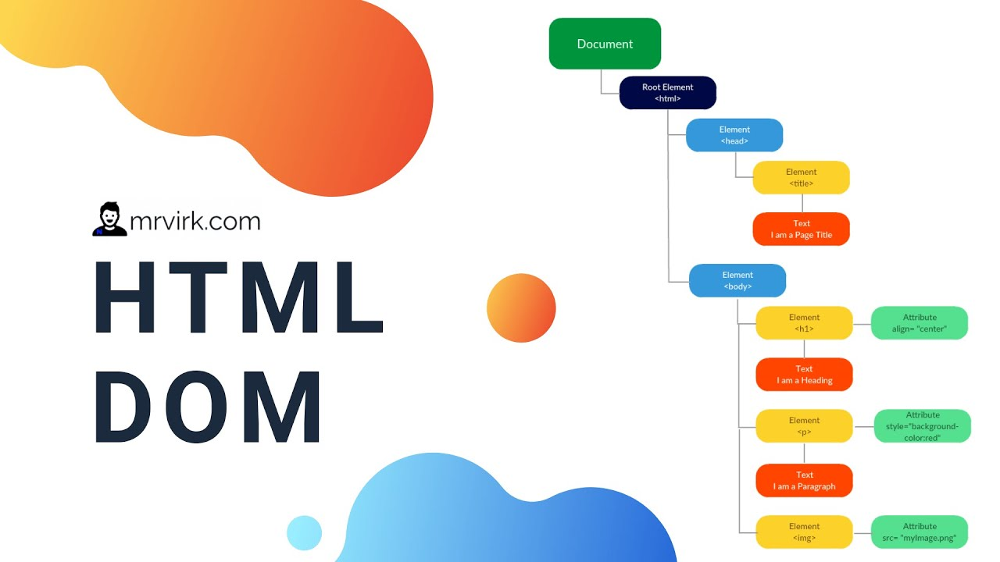

Html Nedir ?
İşaretleme dili olan Html, web sayfalarının hazırlanmasında kullanılan sistemdir. Bir programlama dili
olmayan Html bilgisayarlarımızda kullandığımız web sitelerinin oluşturulmasında kullanılır. Chrome,
Fİrefox ve İnternet Explorer gibi tarayıcılar html kodlarını işleyerek bu kodları web sayfasına dönüştürür.
HTML Neler Sunuyor?
● Görsel, yazı ve video gibi içeriklerin web sayfasına konumlandırılmasını sağlamaktadır.
● Oluşturulan bu içeriklerin doğru şekilde internet sitelerinde görüntülenmesini sağlar.
● Arama motorlarına web siteleri hakkında bilgi verir.
Html kodu yazmak için bilgisayarlara bir program yüklemek gerekmez. Wordpad, not defteri ya da word
gibi ortalarda bir metin editörü html sayfaları oluşturabilir. Kod yazmayı daha kolay hale getirmek için
dreamwear, sublime Text ve notepad++ gibi araçlar kullanılabilir. Yazılan html kodları kaydedilirken htm,
xhtml ve html gibi tarayıcıların anlayacağı şekilde kaydedilmesi gerekiri.
HTML Yazarken Dikkat Edilmesi Gerekenler
A- "" şeklinde () büyüktür ifadesi ile yazılan birime tag denir.
B- Açılan etiketler kapatılmalıdır. Etiketler / işareti ile kapatılır.
C- Html kodları yazılırken Türkçe karakter yer almaz.
D- Bu etiketler yazılırken küçük ya da büyük harf tercih edilebilir. Ancak genellikle küçük harfler tercih edilir.

HTML Etiketleri ve HTML Etiketlerinin Anlamları
● Html: Tüm etiketleri saran, html kodu ile kodlama işleme yapılması gerektiğini belirten sayfanın başında
açılarak sayfanın sonunda da kapatılan etiketin adıdır.
● Head: Hazırlanan site ile alakalı içerik ve tanımların yer aldığı bölümdür. Bu alanda yer alan kodlar
sitede görünmez.
● Body: Bu alan tüm sitenin görüntülendiği ve siteye giren herkesin görebildiği alandır. Kullanılan
etiketlerin büyük kısmı body alanı üzerinde yer bulunur.
Metin Düzenleme Etiketleri
Tagının içine yazılan metin düzenleme etiketleri tek tek incelendiğinde şu detaylar öne çıkıyor.
1) Başlık Etiketi: Başlık eklemek için bu başlık kullanılır.
Başlıktaki h, İngilizce heading yani başlık demektir. h1, h2, h3, h4, h5, h6 olarak 6 değişik şekilde başlık
boyutu vardır. EN büyük başlık için h1 tercihi kullanılır.
2) Kalınlık Etiketi: Yazıları kalın yapmak için etiketi tercih edilir. İngilizce bol kelimesi kalın demektir. Bu
kelimenin baş harfi kullanılarak simgesi oluşturulmuştur.
3) İtalik (eğik yazı) Etiketi: Eğik yazım için bu etiket tercih edilir. İngilizce ıtalic kelimesinin baş harfi
kullanılarak simgesi oluşturulmuştur. Vurgu yapılması gereken yerde bu etiket kullanılır.
4) Altını Çiz etiketi: İstenen yerlerin altını çizmekte kullanılan bu etiket İngilizce underline kelimesinin baş
harfi ile oluşturulmuştur.
5) Alt Satıra Geç Etiketi: Alt satıra geçmek için html kodu yazarken enter tuşu işe yaramaz. Bu işlem için
"br"etiketi ile html de alt satıra geçilir.
6) Paragraf Etiketi: Uzun yazılarda okunurluğu arttırmak için metni paragrafla bölmek için etiketi
kullanılır.
7) Etiketi: Bu etiket yazının renk ayarla işlemi, yazı boyutu değiştirme işlemi ve yazı tipini değiştirme
işlemini yapmak için bu etiket kullanılır. Bu üç işlemi aynı etiket ile yapmak için 1 ve 7 arasındaki
parametreler etiket içinde kullanılır.
HTML'de Bağlantı Oluşturma
Html'de bağlantı oluşturma aslında gezinti işlemlerinin temelini oluşturur. Web sayfası birçok alt başlık
menüden meydana gelir bunun için html kodları bu alanlar arası bağlantı oluşturarak bağlantı ağı
oluşturulur.
● Site İçi Bağlantı Oluşturma: etiketi ile web sayfası içinde bağlantı ağı oluşturulabilir.
● Site Dışı Bağlantı oluşturma: Site dışı bağlantı dendiğinde siteniz ile Facebook ile bağlantı kurulabilir.
● Site dışı bağlantı yapılırken site adının baş kısmına https:// ya da http:// ön eki eklenmesi gerekir.

HTML DOM Nedir?
● DOM Document Object Model kelimesinin kısaltılmasından gelir ve Türkçe karşılığı Belge Nesne
Modelidir.
● DOM, HTML, XML gibi belgelerin diğer programlama dilleri veya script dilleriyle iletişim kurabilmesini
sağlamak için geliştirilmiş bir arabirimdir.
● Programlama dillerinde sıkça karşımıza çıkan Object Oriented yaklaşımı da bu yapıya benzerdir. Object
Oriented yaklaşımında kullandığımız nesneler yada sınıflar, DOM yapısına göre bir HTML sayfası
içerisinde bulunan etiketleri (tag) kapsar.

Yukarıdaki görselde olduğu gibi HTML sayfasında bulunan "head", "body", "h1", "img" gibi etiketler
birer DOM nesneleridir.
DOM sayesinde HTML veya XML elemanları ile programlama veya script dilleri arasında haberleşme
sağlayarak daha etkileşimli web siteler yapılabilmesini sağlanır.
DOM, Javascript, PHP, ASP, Java vb. birçok dile destek verir.
Örnek olarak web projelerinde sıkça kullandığımız Javascript ile bir DOM elemanıyla örnek verelim:
Örnek 1
<div><html>
<head>
<title>Dom Örneği | Mediaclick.com.tr</title>
<script type="text/javascript">
function renkDegistir(Obj)
{
Obj.style.border='1px solid red';
}
</script>
</head>
<body>
<div style="border:solid 1px #333;" onMouseOver="renkDegistir(this)">
DOM Örneği
</div>
</body>
</html></div>
1-) Yukarıdaki örnekte bir HTML belgesi içerisine "html", "head","body", "div" gibi etiketler tanımladık.
2-) "div" etiketi ile Javascript kodumuzun iletişimi için "div" etiketine onMouseOver özelliği tanımladık ve
bu özelliği renkDegistir() adında bir Javascript fonksiyonuna (this) ifadesiyle gönderdik.
3-) Javascript kodumuzda Obj parametresi ile hangi etiketten geldiğini belirledik ve o etikete
Obj.style.border = ‘1px solid red’ diyerek yeni bir stil kazandırdık.
NOT : Ayrıca, DOM nesnelerine (this) gibi parametre kullanarak iletişim kurabildiğimiz gibi, id, name, class
gibi özellikler (attribute) tanımlayarak da yapabiliriz.
Bir başka örnek daha yaparak DOM yapısını daha yakından tanıyalım.
Örnek 2
<div><html>
<head>
<title>PHP ile DOM | Mediaclick.com.tr</title>
</head>
<body>
<form method=”POST” action=”post.php”>
<input type="text" name="name">
<input type="text" name="surname">
<input type="submit" value="Gönder">
</form>
</body>
</html>
post.php
</div>
1-) Yukarıdaki örnekte yine bir HTML belgesi içerisinde bazı etiketler kullandık.
2-) Form etiketi içerisinde iki adet inputumuz var. Bu inputları action post.php ifadesiyle post.php adında
bir php dosyasına gönderiyoruz.
3-) post.php dosyasında da inputlardan gelen ifadeleri name özelliğiyle yakalayıp değişkene atıyoruz ve
ekrana basıyoruz.
● Html: Tüm etiketleri saran, html kodu ile kodlama işleme yapılması gerektiğini belirten sayfanın başında
açılarak sayfanın sonunda da kapatılan etiketin adıdır.
● Head: Hazırlanan site ile alakalı içerik ve tanımların yer aldığı bölümdür. Bu alanda yer alan kodlar
sitede görünmez.
● Body: Bu alan tüm sitenin görüntülendiği ve siteye giren herkesin görebildiği alandır. Kullanılan
etiketlerin büyük kısmı body alanı üzerinde yer bulunur.
Tagının içine yazılan metin düzenleme etiketleri tek tek incelendiğinde şu detaylar öne çıkıyor.
1) Başlık Etiketi: Başlık eklemek için bu başlık kullanılır.
Başlıktaki h, İngilizce heading yani başlık demektir. h1, h2, h3, h4, h5, h6 olarak 6 değişik şekilde başlık
boyutu vardır. EN büyük başlık için h1 tercihi kullanılır.
2) Kalınlık Etiketi: Yazıları kalın yapmak için etiketi tercih edilir. İngilizce bol kelimesi kalın demektir. Bu
kelimenin baş harfi kullanılarak simgesi oluşturulmuştur.
3) İtalik (eğik yazı) Etiketi: Eğik yazım için bu etiket tercih edilir. İngilizce ıtalic kelimesinin baş harfi
kullanılarak simgesi oluşturulmuştur. Vurgu yapılması gereken yerde bu etiket kullanılır.
4) Altını Çiz etiketi: İstenen yerlerin altını çizmekte kullanılan bu etiket İngilizce underline kelimesinin baş
harfi ile oluşturulmuştur.
5) Alt Satıra Geç Etiketi: Alt satıra geçmek için html kodu yazarken enter tuşu işe yaramaz. Bu işlem için
"br"etiketi ile html de alt satıra geçilir.
6) Paragraf Etiketi: Uzun yazılarda okunurluğu arttırmak için metni paragrafla bölmek için etiketi
kullanılır.
7) Etiketi: Bu etiket yazının renk ayarla işlemi, yazı boyutu değiştirme işlemi ve yazı tipini değiştirme
işlemini yapmak için bu etiket kullanılır. Bu üç işlemi aynı etiket ile yapmak için 1 ve 7 arasındaki
parametreler etiket içinde kullanılır.
HTML'de Bağlantı Oluşturma
Html'de bağlantı oluşturma aslında gezinti işlemlerinin temelini oluşturur. Web sayfası birçok alt başlık
menüden meydana gelir bunun için html kodları bu alanlar arası bağlantı oluşturarak bağlantı ağı
oluşturulur.
● Site İçi Bağlantı Oluşturma: etiketi ile web sayfası içinde bağlantı ağı oluşturulabilir.
● Site Dışı Bağlantı oluşturma: Site dışı bağlantı dendiğinde siteniz ile Facebook ile bağlantı kurulabilir.
● Site dışı bağlantı yapılırken site adının baş kısmına https:// ya da http:// ön eki eklenmesi gerekir.
HTML DOM Nedir?
● DOM Document Object Model kelimesinin kısaltılmasından gelir ve Türkçe karşılığı Belge Nesne
Modelidir.
● DOM, HTML, XML gibi belgelerin diğer programlama dilleri veya script dilleriyle iletişim kurabilmesini
sağlamak için geliştirilmiş bir arabirimdir.
● Programlama dillerinde sıkça karşımıza çıkan Object Oriented yaklaşımı da bu yapıya benzerdir. Object
Oriented yaklaşımında kullandığımız nesneler yada sınıflar, DOM yapısına göre bir HTML sayfası
içerisinde bulunan etiketleri (tag) kapsar.
Yukarıdaki görselde olduğu gibi HTML sayfasında bulunan "head", "body", "h1", "img" gibi etiketler
birer DOM nesneleridir.
DOM sayesinde HTML veya XML elemanları ile programlama veya script dilleri arasında haberleşme
sağlayarak daha etkileşimli web siteler yapılabilmesini sağlanır.
DOM, Javascript, PHP, ASP, Java vb. birçok dile destek verir.
Örnek olarak web projelerinde sıkça kullandığımız Javascript ile bir DOM elemanıyla örnek verelim:
Örnek 1
1-) Yukarıdaki örnekte bir HTML belgesi içerisine "html", "head","body", "div" gibi etiketler tanımladık.
2-) "div" etiketi ile Javascript kodumuzun iletişimi için "div" etiketine onMouseOver özelliği tanımladık ve
bu özelliği renkDegistir() adında bir Javascript fonksiyonuna (this) ifadesiyle gönderdik.
3-) Javascript kodumuzda Obj parametresi ile hangi etiketten geldiğini belirledik ve o etikete
Obj.style.border = ‘1px solid red’ diyerek yeni bir stil kazandırdık.
NOT : Ayrıca, DOM nesnelerine (this) gibi parametre kullanarak iletişim kurabildiğimiz gibi, id, name, class
gibi özellikler (attribute) tanımlayarak da yapabiliriz.
Bir başka örnek daha yaparak DOM yapısını daha yakından tanıyalım.
Örnek 2
1-) Yukarıdaki örnekte yine bir HTML belgesi içerisinde bazı etiketler kullandık.
2-) Form etiketi içerisinde iki adet inputumuz var. Bu inputları action post.php ifadesiyle post.php adında
bir php dosyasına gönderiyoruz.
3-) post.php dosyasında da inputlardan gelen ifadeleri name özelliğiyle yakalayıp değişkene atıyoruz ve
ekrana basıyoruz.